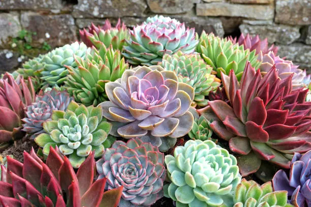

🪴 Conhecendo as suculentas!
As suculentas são plantas que guardam água nas folhas e nos caules. Por isso, muitas delas aguentam bem períodos de pouca chuva.

🪴 O que a suculenta gosta?
Antes de conhecer melhor essa planta, descubra duas coisas importantes para cuidar dela:
Água
Muitas suculentas preferem que o solo seque entre uma rega e outra. Regar demais costuma fazer mais mal do que regar de menos.
Luz
A maioria gosta de bastante claridade. Com pouca luz, algumas ficam esticadas e perdem a cor. A quantidade ideal varia de espécie para espécie.
Importante: pouca água não significa nenhuma água! A suculenta ainda precisa ser regada quando o solo estiver seco. O segredo é observar a planta.
🪴 O que torna uma suculenta especial?
Suculentas não são uma família só: são plantas de vários grupos que têm algo em comum, a capacidade de guardar água em partes carnudas. Muitas vivem em lugares secos ou rochosos.
Folhas que guardam água
As folhas gordinhas funcionam como pequenos reservatórios que ajudam a planta em períodos secos.
Formatos de roseta
Muitas crescem com as folhas dispostas em círculo, como uma flor. Isso pode ajudar a captar luz.
Cada folha pode virar planta
Em várias espécies, uma folha que se solta pode criar raízes e dar origem a uma nova plantinha. Nem todas fazem isso.
🔎 Detetive das suculentas!
Toque nos tópicos para descobrir como cada detalhe ajuda a suculenta a viver bem.
🍃 Por que as folhas são gordinhas?
As folhas armazenam água, por isso ficam grossas e carnudas. Essa reserva ajuda a planta quando passa muito tempo sem chuva.
🎨 Por que algumas mudam de cor?
Com bastante sol, algumas suculentas ganham tons de rosa, roxo ou laranja. Isso pode acontecer também em situações de estresse, então vale observar o conjunto da planta.
📏 Por que ela fica esticada?
Quando falta luz, algumas suculentas crescem alongadas, procurando claridade. Esse fenômeno é chamado de estiolamento.
🥀 O que significam folhas moles e enrugadas?
Pode ser sinal de falta de água, mas também de excesso, quando as raízes estão estragadas. Por isso, antes de regar, confira o solo.
🪴 Como cuidar de uma suculenta?
Suculentas costumam dar pouco trabalho, mas gostam de atenção na medida certa.
Escolha um lugar claro
Muitas gostam de bastante luz. Se for mudar a planta para um lugar com mais sol, faça isso aos poucos.
Regue quando o solo secar
Espere a terra secar bem e então molhe. Observe a planta e o solo, em vez de seguir um calendário fixo.
Use um vaso com furos
O excesso de água precisa escapar. Terra bem drenada ajuda a proteger as raízes.
Cuidado com as folhas
As folhas de muitas suculentas se soltam com facilidade. Evite apertar ou puxar a planta.
🧠 E agora, pequeno jardineiro?
Imagine que você tem uma suculenta que está com as folhas moles e enrugadas. O solo está bem úmido. Será que ela precisa de mais água?
Qual é a atitude mais sensata?
Descobrir a resposta
💡 Folhas moles com solo úmido podem indicar excesso de água. Nesse caso, regar mais pode piorar o problema.
Antes de regar, confira a umidade do solo e se o vaso permite a saída da água.
💡 Você sabia?
Existem suculentas que parecem pedrinhas! Elas ficam quase escondidas no chão, e isso ajuda a se misturar com o ambiente.
E o Meu PlantAmigo?
O Meu PlantAmigo acompanha a umidade do solo para ajudar você a saber o momento de regar. Para uma suculenta, isso é muito útil: ela costuma preferir o solo seco entre as regas, então é importante não exagerar na água.
🪴 Você virou especialista em suculentas!
Agora que você descobriu os segredos dessas plantas, teste seus conhecimentos no quiz.
Fazer o quiz